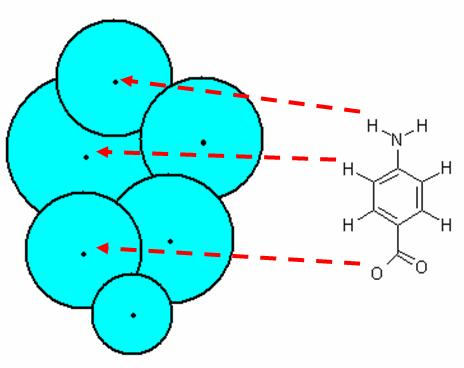
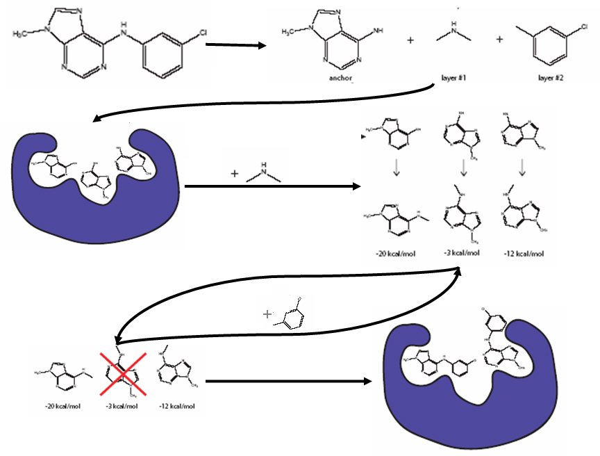

Rigid and Flexible Ligand DOCKing
Author: P. Therese Lang
Last updated July 31, 2018 by Scott Brozell
This tutorial describes rigid- and flexible-ligand DOCKing to a rigid receptor with grid-based scoring. We study the complex L-Arabinose-Binding Protein bound to L-Arabinose (PDB ID 1ABE ) as an example system. However, these techniques should be transferable to any protein-ligand system.
To start this tutorial, obtain the lig_charged.mol2 text file from the "Structure Preparation Tutorial," the selected_spheres.sph text file from the "Sphere Generation and Selection Tutorial," and the grid.nrg and grid.bmp binary files from the "Grid Generation Tutorial." The program dock6 that is distributed and installed with DOCK is required. This ligand input file contains a single ligand, but multiple ligands would be treated simply by including more ligands in the ligand input file.
OPTION 1: Rigid Ligand DOCKing.
In this first case, the ligand will be kept completely rigid during the orientation step. The purpose is to explore the matching and minimization algorithms. However, this type of docking could be applied in a scientific setting if you have a library of ligands that have already been conformationally expanded outside of the DOCK suite of programs.
The rigid body orienting code is written as a direct implementation of the isomorphous subgraph matching method of Crippen and Kuhl (Kuhl, et al. J. Comput. Chem. 1984). Conceptually, the algorithm matchings the centers of the ligand heavy atom to the centers of the receptor site spheres. The algorithm follows the steps below:

1) Generate node
2) Label as match if atom and sphere edges are equivalent
3) Extend match by adding more nodes
4) Exhaustively generate set of non-degenerate matches
5) Use matches to create transformation matrices to move the entire molecule
node = pairing of one heavy atom and one sphere center
edge length = Euclidean distance between atom or sphere centers
Once an orientation has been generated, the interaction between the ligand and the receptor can be energetically optimized, in this case using a simplex minimizer (Nelder, et al. Computer Journal 1965). During minimization, the ligand is allowed to be flexible, but the receptor remains rigid. The final score in the output file is the best pose generated from the orienting and minimization procedure.
To actually run the docking calculation, you need to use the program dock6 that is distributed with DOCK in the /bin directory. You need to generate an input file--rigid.in in this case--either interactively by answering questions or by hand in a text file.
USAGE: dock6 -i input_file [-o output_file] [-v]
OPTIONS:
-i input_file #Input parameters extracted from input_file, or dock.in if not specified
-o output_file #Output written to output_file, or dock.out if not specified
-v #Increased output verbosity
DOCK may be executed in either interactive or batch mode, depending on whether output is written to a file. In interactive mode, the user is requested only for parameters relevant to the particular run and default values are provided. This mode is recommended for the initial construction of the input file and for short calculations. In batch mode, input parameters are read in from the input file and all output is written to the output file. This mode is recommended for long calculations once an input file has been generated interactively. dock.in and dock.out are the default input/output names, but you may specify others. For more information on various ways to run the dock6 executable, see the DOCK 6 manual.
Below are some typical parameters that may be declared for this type of grid scoring calculation.
NOTE: The following parameter definitions will use the format below:
parameter_name [default] (value):
#descriptionIn some cases, parameters are only needed (questions will only be asked) if the parameter above is enforced. These parameters are indicated below by additional indentation.
- use_internal_energy [yes] (yes, no):
# Flag to use internal energy (only repulsive VDW) for growth and/or minimization
- internal_energy_rep_exp [12] (int):
# The repulsive VDW exponent- ligand_atom_file [database.mol2] (string):
# The ligand input filename- limit_max_ligands [no] (yes, no):
# Limit the number of ligands to be read in from a library- skip_molecule [no] (yes, no):
# Skip some number of molecules at the beginning of a library- read_mol_solvation [no] (yes, no):
# Flag to read atomic desolvation information from ligand file- calculate_rmsd [no] (yes, no):
# Flag to perform an RMSD calculation between the final molecule pose
# and its initial structure.- orient_ligand [yes] (yes, no):
# Flag to orient ligand to spheres- automated_matching [yes] (yes, no):
# Flag to perform automated matching instead of manual matching- receptor_site_file [receptor.sph] (string):
# The file containing the receptor spheres- max_orientations [500] (int):
# The maximum number of orientations that will be cycled through- critical_points [no] (yes, no):
# Flag to use critical point sphere labeling to target orientations to particular spheres- chemical_matching [no] (yes, no):
# Flag to use chemical coloring of spheres to match chemical labels on ligand atoms- use_ligand_spheres [no] (yes/no):
# Flag to enable a sphere file representing ligand heavy atoms to be used to orient the ligand- bump_filter [yes] (yes, no):
# Flag to perform bump filtering- score_molecules [yes] (yes, no):
# Flag to use a scoring function- contact_score_primary [no] (yes, no):
# Flag to perform contact scoring as the primary scoring function- contact_score_secondary [no] (yes, no):
# Flag to perform contact scoring as the secondary scoring function- grid_score_primary [yes] (yes, no):
# Flag to perform grid-based energy scoring as the primary scoring function- grid_score_secondary [no] (yes, no):
# Flag to perform grid-based energy scoring as the secondary
# scoring function
- grid_score_rep_rad_scale [1] (float):
# Scalar multiplier of the VDW radii for the repulsive portion of the
# Lennard-Jones potential- grid_score_vdw_scale [1] (float):
# Scalar multiplier of the VDW energy component- grid_score_es_scale [1] (float):
# The prefix to the grid files containing the desired energy grid- grid_score_grid_prefix [grid] (string):
# The prefix to the grid files containing the desired nrg grid- multigrid_score_secondary [no] (yes no):
# Flag to perform MultiGrid FPS Score as the secondary scoring function- dock3.5_score_secondary [no] (yes, no):
# Flag to perform dock3.5 scoring as the secondary scoring function- continuous_score_secondary [no] (yes, no):
# Flag to perform continuous scoring as the secondary scoring function- gbsa_zou_score_secondary [no] (yes, no):
# Flag to perform Zou GB/SA scoring as the secondary scoring function- gbsa_hawkins_score_secondary [no] (yes, no):
# Flag to perform Hawkins-Cramer-Truhlar GB/SA scoring as the secondary
# scoring function- SASA_descriptor_score_secondary [no] (yes no):
# Flag to perform SASA Score as the secondary scoring function- amber_score_secondary [no] (yes, no):
# Flag to perform AMBER scoring as the secondary scoring function- minimize_ligand [yes] (yes, no):
# Flag to perform score optimization- simplex_max_iterations [50] (int):
# Maximum number of minimization cycles- simplex_max_cycles [1] (int):
# Maximum number of minimization cycles- simplex_score_converge [0.1] (float):
# Exit cycle at when energy converges at cutoff- simplex_cycle_converge [1.0] (float):
# Exit minimization when cycles converge at cutoff- simplex_trans_step [1.0] (float):
# Initial translation step size- simplex_rot_step [0.1] (float):
# Initial rotation step size- simplex_tors_step [10.0] (float):
# Initial torsion angle step size- simplex_random_seed [0] (int):
# Seed for random number generator- atom_model [all] (all, united):
# Choice of all atom or united atom models- vdw_defn_file [vdw.defn] (string):
# File containing VDW parameters for atom types- flex_defn_file [flex.defn] (string):
# File containing conformational search parameters- flex_drive_file [flex_drive.defn] (string):
# File containing conformational search parameters- ligand_outfile_prefix [output] (string):
# The prefix that all output files will use- write_orientations [no] (yes, no):
# Flag to write all anchor orientations- num_scored_conformers [1] (int):
# The number of conformations scored for each ligand.
# For each ligand the top scoring pose is printed to outfile_scored.mol2- rank_ligands [no] (yes, no):
# Flag to enable a ligand top-score list. These ligands will be written to
# outfile_ranked.mol2.
NOTE: You should specify the full paths for the ligand file, sphere file, the grid file, and vdw and conformational search definition files. A more detailed explanation of the scoring functions and the input parameters can be found in the DOCK 6 Manual.
The program will generate an output file, rigid.out. It lists the parameters utilized in the run, any warning or error messages, and summary information about the best scoring pose. DOCK will also produce a structure file, rigid_scored.mol2, containing the geometric coordinates of the best pose as well as a summary of the interaction energy of that pose. These files are human readable and should be examined carefully. UCSF's Chimera has a ViewDock facility for visualizing DOCK output. See also the ViewDock Tutorial.
OPTION 2: Flexible Ligand DOCKing.
In this second case, the ligand will be allowed to be flexible. This type of docking allows the ligand to structurally rearrange in response to the receptor.
First, the largest rigid substructure of the ligand (the anchor) is identified (see the first bold arrow in the figure below). All bonds within molecular rings are treated as rigid. This classification scheme is a first-order approximation of molecular flexibility, since some amount of flexibility can exist in non-aromatic rings. To treat such phenomena as sugar puckering and chair-boat hexane conformations, the user needs to supply each ring conformation as a separate input molecule. If the molecule does not have a ring, the largest rigid segment is specified as the anchor. Additional bonds may be specified as rigid by the user.
Next the flexible layers of the ligand are identified (see the first bold arrow in the figure below). Each flexible bond is associated with a label defined in an editable file. The parameter file is identified with the flex_definition_file parameter. Each label in the file contains a definition based on the atom types and chemical environment of the bonded atoms. Typically, bonds with some degree of double bond character are excluded from minimization so that planarity is preserved. Each label is also associated with a set of preferred torsion positions. The location of each flexible bond is used to partition the molecule into rigid segments. A segment is the largest local set of atoms that contains only non-flexible bonds.

Cartoon of Anchor-and-Grow Algorithm
In the second stage of the Anchor-and-Grow Algorithm the anchor is rigidly oriented in the active site (see the second bold arrow in the figure above) using the same method described in Option 1. The anchor orientations are evaluated and optimized using the scoring function and the simplex minimizer, also described in Option 1. The orientations are then ranked according to their score, spatially clustered by heavy atom root mean squared deviation (RMSD), and prioritized (pruning).
Finally, in the growth stage (see the third through the sixth bold arrows in the figure above) the flexible layers of the ligand are built onto the best anchor orientations within the context of the receptor. It is assumed that the shape of the binding site will help restrict the sampling of ligand conformations to those that are most relevant for the receptor geometry (see the red X in the figure above).
To actually run the docking calculation, you need to use the program dock6 that is distributed with DOCK in the /bin directory. You need to generate an input file--anchor_and_grow.in in this case--either interactively by answering questions or by hand in a text file.
dock6 -i dock.in [-o dock.out] [-v]
As described in Option 1, DOCK may be executed in either interactive or batch mode, depending on whether output is written to a file.
Below are some typical parameters that may be declared for this type of grid scoring calculation.
NOTE: The following parameter definitions will use the format below:
parameter_name [default] (value):
#descriptionIn some cases, parameters are only needed (questions will only be asked) if the parameter above is enforced. These parameters are indicated below by additional indentation.
- conformer_search_type [flex] (rigid | flex):
# Flag to perform ligand conformational searching- min_anchor_size [40] (int):
# The minimum number of heavy atoms for an anchor segment- pruning_use_clustering [yes] (yes, no):
# Flag to perform clustering between anchor generation and growth
# and between each layer of growth- pruning_max_orients [100] (int):
# The maximum number of anchor orientations promoted to the growth phase- pruning_clustering_cutoff [100] (int):
# The clustering cutoff value defined as the rank divided by the RMSD between
# the current conformation and the next conformation in the list (previously
# num_confs_for_next_growth)- use_clash_overlap [no] (yes, no):
# Flag to check for overlapping atom volumes during anchor and grow- use_internal_energy [yes] (yes, no):
# Flag to use internal energy (only repulsive VDW) for growth and/or minimization
- internal_energy_rep_exp [12] (int):
# The repulsive VDW exponent- ligand_atom_file [database.mol2] (string):
# The ligand input filename- limit_max_ligands [no] (yes, no):
# Limit the number of ligands to be read in from a library- skip_molecule [no] (yes, no):
# Skip some number of molecules at the beginning of a library- read_mol_solvation [no] (yes, no):
# Flag to read atomic desolvation information from ligand file- calculate_rmsd [no] (yes, no):
# Flag to perform an RMSD calculation between the final molecule pose and its
# initial structure.- orient_ligand [yes] (yes, no):
# Flag to orient ligand to spheres- automated_matching [yes] (yes, no):
# Flag to perform automated matching instead of manual matching- receptor_site_file [receptor.sph] (string):
# The file containing the receptor spheres- max_orientations [500] (int):
# The maximum number of orientations that will be cycled through- critical_points [no] (yes, no):
# Flag to use critical point sphere labeling to target orientations to particular spheres- chemical_matching [no] (yes, no):
# Flag to use chemical coloring of spheres to match chemical labels on ligand atoms- use_ligand_spheres [no] (yes/no):
# Flag to enable a sphere file representing ligand heavy atoms to be used to orient the ligand- bump_filter [yes] (yes, no):
# Flag to perform bump filtering- score_molecules [yes] (yes, no):
# Flag to use a scoring function- contact_score_primary [no] (yes, no):
# Flag to perform contact scoring as the primary scoring function- contact_score_secondary [no] (yes, no):
# Flag to perform contact scoring as the secondary scoring function- grid_score_primary [yes] (yes, no):
# Flag to perform grid-based energy scoring as the primary scoring function- grid_score_secondary [yes] (yes, no):
# Flag to perform grid-based energy scoring as the secondary scoring function
- grid_score_rep_rad_scale [1] (float):
# Scalar multiplier of the VDW radii for the repulsive portion of the
# Lennard-Jones potential- grid_score_vdw_scale [1] (float):
# Scalar multiplier of the VDW energy component- grid_score_es_scale [1] (float):
# The prefix to the grid files containing the desired energy grid- grid_score_grid_prefix [grid] (string):
# The prefix to the grid files containing the desired nrg grid- multigrid_score_secondary [no] (yes no):
# Flag to perform MultiGrid FPS Score as the secondary scoring function- dock3.5_score_secondary [no] (yes, no):
# Flag to perform dock3.5 scoring as the secondary scoring function- continuous_score_secondary [no] (yes, no):
# Flag to perform continuous scoring as the secondary scoring function- gbsa_zou_score_secondary [no] (yes, no):
# Flag to perform Zou GB/SA scoring as the secondary scoring function- gbsa_hawkins_score_secondary [no] (yes, no):
# Flag to perform Hawkins-Cramer-Truhlar GB/SA scoring as the secondary
# scoring function- SASA_descriptor_score_secondary [no] (yes no):
# Flag to perform SASA Score as the secondary scoring function- amber_score_secondary [no] (yes, no):
# Flag to perform AMBER scoring as the secondary scoring function- minimize_ligand [yes] (yes, no):
# Flag to perform score optimization- minimize_anchor [yes] (yes, no):
# Flag to perform rigid optimization of the anchor- minimize_flexible_growth [yes] (yes, no):
# Flag to perform complete optimization during conformational search- use_advanced_simplex_parameters [no] (yes, no):
# Flag to use a simplified set of common minimization parameters for each of the
# minimization steps listed above- simplex_max_cycles [1] (int):
# Maximum number of minimization cycles- simplex_score_converge [0.1] (float):
# Exit cycle at when energy converges at cutoff- simplex_cycle_converge [1.0] (float):
# Exit minimization when cycles converge at cutoff- simplex_trans_step [1.0] (float):
# Initial translation step size- simplex_rot_step [0.1] (float):
# Initial rotation step size- simplex_tors_step [10.0] (float):
# Initial torsion angle step size- simplex_anchor_max_iterations [500] (int):
# Maximum number of iterations per cycle per anchor- simplex_grow_max_iterations [500] (int):
# Maximum number of iterations per cycle per growth step- simplex_random_seed [0] (int):
# Seed for random number generator- atom_model [all] (all, united):
# Choice of all atom or united atom models- vdw_defn_file [vdw.defn] (string):
# File containing VDW parameters for atom types- flex_defn_file [flex.defn] (string):
# File containing conformational search parameters- flex_drive_file [flex_drive.defn] (string):
# File containing conformational search parameters- ligand_outfile_prefix [output] (string):
# The prefix that all output files will use- write_orientations [no] (yes, no):
# Flag to write all anchor orientations- num_scored_conformers [1] (int):
# The number of conformations scored for each ligand.
# For each ligand the top scoring pose is printed to outfile_scored.mol2- rank_ligands [no] (yes, no):
# Flag to enable a ligand top-score list. These ligands will be written to
# outfile_ranked.mol2.
NOTE: You should specify the full paths for the ligand file, sphere file, the grid file, and vdw and conformational search definition files. A more detailed explanation of the scoring functions and the input parameters can be found in the DOCK 6 Manual.
The program will generate an output file, anchor_and_grow.out, summarizing the parameters utilized in the run, any warning or error messages, and summary information about the best scoring pose. It will also produce a structure file, anchor_and_grow_scored.mol2, containing the geometric coordinates of the best pose as well as a summary of the interaction energy of that pose. These files are human readable and should be examined carefully. See also the previous comments on Chimera ViewDock.
{kind=link}